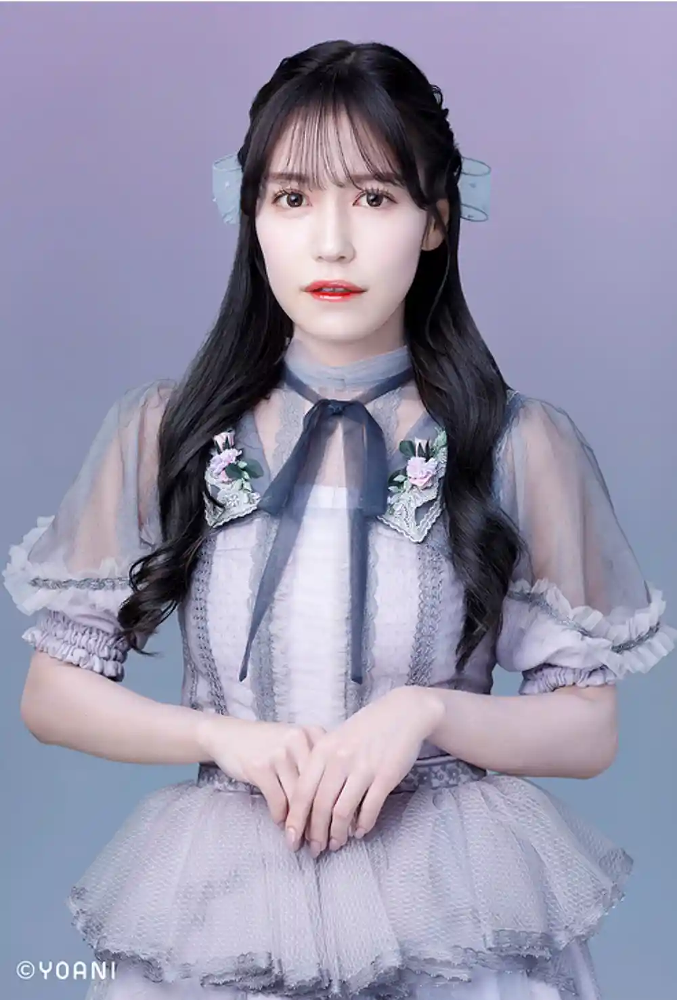

ホーム
楽曲一覧
=LOVE
僕らの制服クリスマス
手遅れcaution
Want you！Want you！
探せ ダイアモンドリリー
ズルいよズルいね
CAMEO
青春“サブリミナル”
全部、内緒
ウィークエンドシトロン
The 5th
あの子コンプレックス
Be Selfish
この空がトリガー
ナツマトペ
ラストノートしか知らない
呪って呪って
絶対アイドル辞めないで
見なくて良い
あの子コンプレックス
あの子コンプレックス
笑顔のレシピ
僕のヒロイン
知らんけど
大谷 映美里
大場 花菜
音嶋 莉沙
齋藤 樹愛羅
齊藤 なぎさ
佐々木 舞香
髙松 瞳
瀧脇 笙古
野口 衣織

諸橋 沙夏
山本 杏奈